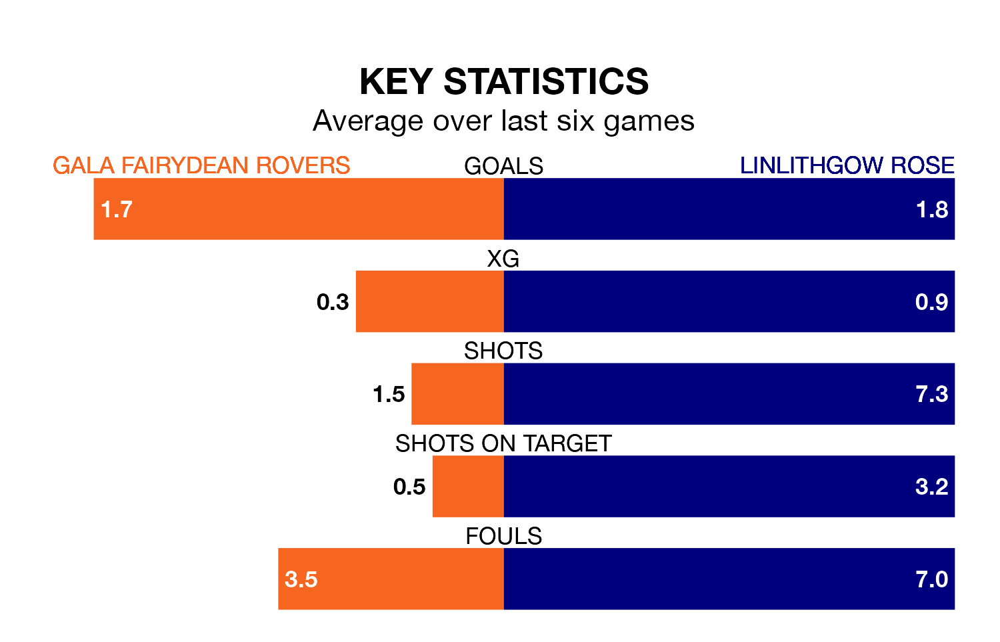

Gala Fairydean Rovers host Linlithgow Rose in Saturday's match at Netherdale Football Ground looking to bounce back from defeat last time out in Highland and Lowland Football Leagues.
Gala Fairydean, who sit zero in the league after 18 games, fell to a 4-2 away defeat to East Kilbride on December 9.
They face a Linlithgow Rose side who picked up a win in their last match, a 5-0 victory against Gretna 2008, and who sit 15th in the table.
Gala Fairydean are in bad form in Highland and Lowland Football Leagues, with one win and a draw from their last six games.
With three wins and a draw over that period, Linlithgow Rose's form is much better – they have taken 10 points from 18, compared to Rovers' four.
With 32 goals in 16 games so far this season, the visitors are scoring more than average in the league with 2.0 goals per game. And they are conceding fewer than average, letting in 20 goals at a rate of 1.2 per game.
The home team, meanwhile, are below average scorers, with 1.5 goals per game, compared to a league average of 1.7. They have conceded 2.2 goals per game.
